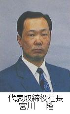

ご挨拶

昭和２７年２月より創業開始した株式会社 浜岳製作所は、これから企業としてどうあるべきかの方向性を見出し、新しい金属加工メーカー姿を追求していきます。
製造メーカーは、まず「つくる」事が原点であり、いかに「良い製品をより安く、より早く」つくるにはどう対処するか、つくり手自身が自信と誠意を持ってやることを大切にしていきます。
今日、エレクトロニクスを中心とするテクノロジーのめざましい進歩と、国際競争の激化・需要の多様化等、厳しい経営環境の中、生産設備の自動化と品質保証体制の確立を図り、また設備と人の上手な融合をめざして、顧客のニーズに応えるべく更に努力を重ねてまいりたいと思います。
日頃のご愛願を深く感謝すると共に、何卒今後とも、尚一層のご指導とご鞭撻を賜りますよう、心からお願い申し上げます。